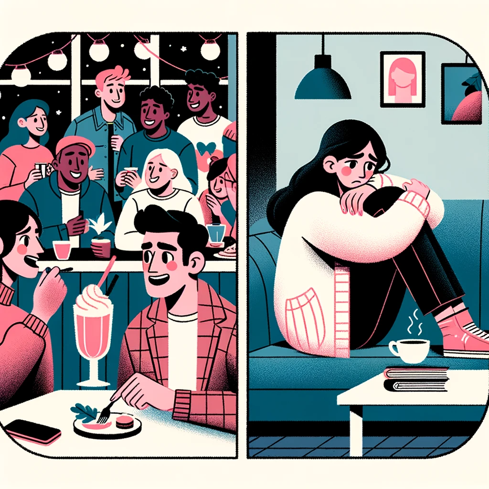

Coping with a Breakup
So, for all you newbies who ask the questions, "will the hurting ever stop?", or "will my ex come back?", or "why did he/she do this?" this is how it typically goes down.
You two break up - it doesn't matter who does it. You immediately panic and begin chasing, begging, pleading, harassing, phoning, texting, DMing, stalking their social media (okay not all of them, just pick whichever ones you did). Most of us will likely do some things during this stage that will make you cringe when you think back on it, say after about 3 months.
You lose weight. You neglect yourself, your house, your job (how many hours do we all log on this site while we are at work?). You drive your friends and family crazy talking about the breakup. You cry at the drop of a dime. You can't even comprehend that your life might not again include that "special person." You begin putting them on a pedestal, forgetting all of the nagging things about them that used to drive you crazy. In your mind, they have become omnipotent, all-encompassing, all everything.
You convince yourself that you are a loser who just screwed up a relationship with "the best person in the world." You KNOW without a doubt that you will never EVER love like that again. You know no one else will come along who even comes close to being as marvelous as your ex (excuse me while I chuckle to myself here). You wear a sad face for the world to see (you should see my work ID taken 2 days after my breakup, it's just pitiful).
They (the exes) remain steadfast in their denial to get back together. Many of them leapfrog into new relationships, immediately being exclusive with a new person. For those that do leapfrog, they appear to just "replace" you with a new model. All of the things you two used to do, they now do with someone else. Bowling, cuddling watching television, motorcycle riding, antiquing. Whatever you two did, likely they will just begin doing those things with someone new.
You hear about them and their new life. You are desperate for any crumbs of news about their life. Many of us make things worse here by trying to use manipulation to get them back - yet they stay away from us like we are the plague.
For those of us who still have contact with our exes, we begin selling ourselves short. Doing stupid things like allowing them access to our bodies and then wanting to strangle them afterward when they remind us that "Sex does not imply hope."
You, in further panic mode, begin frantically searching the internet using phrases such as "break ups," "divorce stopper," whatever. You stumble upon different sites and find folks just like you in various stages of this whole breakup bullshit.
You voraciously read the posts. You search for news of those who "got their mates back." You're on the site constantly. You'll read the books and think "Ah I can do this. I can get this person back." You begin your "no contact" and for some of us, this will get a reaction from our exes. For the rest, no contact is and will continue to be what you'll get and receive.
Time goes by. You'll do some stupid things. You'll call your ex when you shouldn't. You'll call when you've had too much to drink. You'll call even after all your friends tell you not to. You'll show up on their doorstep, hating yourself all the time. Then you'll go back to your friends and have them tell you why you were so stupid as to do whatever it was you did.
Then you'll get serious about no contact. It'll hurt, but you try to stick to it. Here's the turning point for most. For those folks who have contact with their exes, your no contact will either bring them sniffing curiously around or they'll be somewhere high-fiving their friends thanking the gods that you haven't called.

Now's the tough time. Nothing but time works. Every day the ache in your heart grows a little less. It's only nano bits that it dies down by. But every day it will get slowly better. You'll have setbacks. You'll run into your ex accidentally. You'll run into mutual friends who'll tell you something about your ex that'll have you high-tailing it home for a good cry. You'll see your ex with their new "friend." You'll receive a phone call or a text from your ex who "doesn't want to be in a relationship but still wants to be friends” (with benefits if you allow).
Here's another important part. You must truly sit down and truthfully look back at the relationship and understand what you did to help with its demise. If you miss this part, you go through all the suffering for nothing because Buddy, you'll be back here again. You need to come out of this learning how to be a better partner, a better person. Missing that lesson is detrimental to the whole process. It's the REASON that you're going through this. God (or whatever your higher power is) needed you to learn something about YOU. Don't miss out on the lesson.
Then one day you'll smile because you didn't immediately check your phone when you woke up. And one day you'll decide to clean the muck that has accumulated in your house. And one day you'll go outside and admit to the universe that you surrender what control you thought you had.
And one day you'll decide to date again. And one day you'll go out on your first date and it will likely be a disaster. And then you'll either force yourself to continue dating or you'll decide that you aren't ready to date but you are ready to be out amongst people again. And many of you will have some quick reconciliations with your exes. Many of us won't. But one day, it won't matter as much. Because time will allow you to catch yourself going minutes and then hours without thinking of the ex. And you'll begin to be able to think of life possibly without that person and not dissolve into a puddle of nothingness because of the thought.
And for most of us, sadly, life will go on without that mate. That's the truth, amigos. Don't want to dash your hopes but probably less than 5% of the people get back with their mates and have it actually work out. Sobering isn't it? But you must accept this before you can truly begin to heal or draw your ex back to you. For the lucky (maybe unlucky ones depending on how much work it will take to keep a mate that has wandered back) who get back with their exes, many will find that the paradise they envisioned isn't reality and what they once thought was gold has a certain tarnish to it now. But they stay and try and make it work because it's comfortable or, if they are really lucky, it's meant to be.
But for most of us. Life goes on. And one day you'll find yourself having a gut-busting laugh over something totally stupid and you'll think to yourself "I am getting better." And finally (thank God) you'll have sex with some new and find that a) if it wasn't good, at least you did it or b) it was so much better than with your ex that you wonder why you waited so long to get back out there. And you'll know you're on the road to recovery.
I guess what I'm trying to convey here is, that while each situation is unique, the characteristics of most of our situations are the same. Most of us will go through at least something that I've written here. So, when someone tells you on this site that time will help you get through it, believe them. When they tell you "Trust me, it will get better and you will stop hurting eventually," believe them. And when they give you good advice that your head understands but your heart rejects, take a moment to think before you react.
Don't beat yourself up if you do something that you wished you hadn't (calling, contacting, etc) WE ALL DID IT AT ONE TIME OR ANOTHER. Be kind to yourself. Be forgiving of yourself. And most of all remember that being happily single is an alternative. Even if society is beating it into your head that you MUST have a mate, take some time to heal before going back out there. There are plenty of good people to love, but don't go back out there broken, jaded about love, etc. Accept reality. Experience the pain. Learn the lesson. Actively try to heal. Remember the person you were when you first met your ex and get that person back.
And the universe will take care of the rest